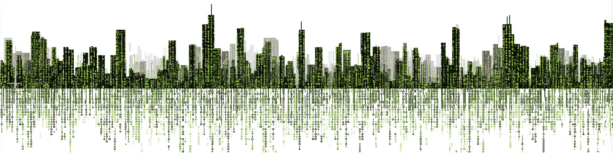
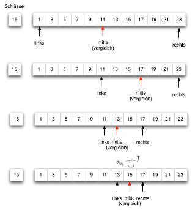

Graphprobleme

Everything is connected to everything else
— Leonardo da Vinci
Graphprobleme erkennen
Was ist ein Graphproblem?

Beziehungsstruktur
Ein Problem ist ein Graphproblem, wenn:
- Es Entitäten gibt (Knoten: Kreuzungen, Anschlüsse, Räume)
- Diese durch Verbindungen verknüpft sind (Kanten: Straßen, Rohre, Türen)
- Fragen nach Wegen, Erreichbarkeit oder Fluss entstehen
Wenn man das Problem als Netzwerk zeichnen kann — es ist ein Graphproblem.
Das Schlüsselmerkmal eines Graphproblems ist die Beziehungsstruktur. Typische Fragen, die auf ein Graphproblem hindeuten:
- “Welcher Weg von A nach B ist am kürzesten?”
- “Sind alle Teile des Netzes verbunden?”
- “Wie viel kann durch das Netz fließen?”
- “Von welchem Knoten aus ist welcher Bereich erreichbar?”
Graphprobleme im Bauingenieurwesen
Straßennetz — Routing
Knoten: Kreuzungen
Kanten: Straßenabschnitte
Gewicht: Reisezeit oder Distanz
Frage: Kürzeste Route A → B?
Rohrnetz — Fluss
Knoten: Anschlüsse / Ventile
Kanten: Rohrleitungen
Gewicht: Durchmesser, Länge
Frage: Druckverlust minimal?
Grundriss — Konnektivität
Knoten: Räume
Kanten: Türöffnungen
Frage: Alle Räume erreichbar?
Entwässerungsnetz — Gerichteter Fluss
Knoten: Einzugsgebiete
Kanten: Abflussrichtungen
Gewicht: Gefälle, Kapazität
Frage: Wohin fließt das Wasser?
Der Graph als Datenstruktur
Knoten, Kanten, Gewichte, Richtung
Knoten (Vertices)
- Entitäten im Netzwerk
- Bezeichner:
A,B,1,2 - Optional: Attribute (Bedarf, Koordinaten)
Kanten (Edges)
- Verbindungen zwischen Knoten
- Gewicht: Länge, Zeit, Kapazität
- Richtung: gerichtet oder ungerichtet
Ungerichtet:
A ——— B ——— C
| |
D ————————— E
Gerichtet (Digraph):
A ——→ B ——→ C
↓ ↑
D ——→ ——→ ——→G = nx.Graph() # ungerichtet
G = nx.DiGraph() # gerichtetFormal ist ein Graph G = (V, E), wobei V die Menge der Knoten (Vertices) und E die Menge der Kanten (Edges) ist.
Gewichte werden als Kantenattribute gespeichert — sie repräsentieren physikalische Größen wie Längen, Reisezeiten oder Kapazitäten.
Richtung bestimmt die Modellwahl: Entwässerungsnetze oder Einbahnstraßen erfordern DiGraph, symmetrische Verbindungen (z.B. Rohre mit Druckausgleich) verwenden Graph.
Gerichtet oder ungerichtet?
Ungerichtet (nx.Graph)
- Straßennetz (beide Fahrtrichtungen)
- Rohrnetz mit Druckausgleich
- Gebäudeverbindungen (Türen)
Einfachere Algorithmen Symmetrische Beziehungen Nicht für alle Realfälle geeignet
Gerichtet (nx.DiGraph)
- Entwässerung (nur bergab)
- Einbahnstraßen
- Abhängigkeitsgraphen
Realistische Modellierung Einbahnbeziehungen möglich Komplexere Traversierung
Graph G = (V, E): Menge von Knoten V und Kanten E. Jede Kante verbindet zwei Knoten. Optional mit Gewichten und Richtungen.
Traversierung und kürzeste Wege
Mini-Beispiel: Drei Räume, drei Wege
Statt direkt mit einem großen Netz zu starten, schauen wir zuerst auf ein minimales Beispiel:
- Knoten:
Eingang,Labor,Buero - Kanten: Tueren zwischen den Raeumen
- Gewicht: Gehzeit in Minuten
Fragen dazu:
- Welche Raeume sind vom
Eingangaus erreichbar? - Welcher Weg hat die wenigsten Schritte?
- Welcher Weg ist mit Zeiten der schnellste?
Eingang --1-- Labor --1-- Buero
\
4
\
Buero- Direkt:
Eingang -> Buero= 4 min - Ueber
Labor:Eingang -> Labor -> Buero= 2 min
Damit sehen wir sofort den Unterschied:
- BFS achtet auf wenige Schritte
- Dijkstra achtet auf kleines Gesamtgewicht
- DFS prueft gut, was ueberhaupt erreichbar ist
Breitensuche (BFS): Schicht für Schicht
Breitensuche besucht Knoten schichtweise — zuerst alle direkten Nachbarn, dann deren Nachbarn.
- Starte am Quellknoten (Schicht 0)
- Besuche alle direkten Nachbarn (Schicht 1)
- Dann deren Nachbarn (Schicht 2) usw.
Findet: Kürzester Weg in Sprüngen (ohne Gewichte)
Anwendung: Ausbreitung eines Hochwasserereignisses — welche Gebiete sind in wie vielen Schritten betroffen?
nx.bfs_tree(G, source="Quelle")Schicht 0: [Quelle]
Schicht 1: [A, B, C]
Schicht 2: [D, E, F]
Schicht 3: [Ziel]BFS garantiert: Weg zur kleinsten Sprungzahl
Nicht geeignet, wenn Gewichte wichtig sind!
Tiefensuche (DFS): Pfad bis zum Ende
Tiefensuche folgt einem Pfad so tief wie möglich vor dem Zurückkehren.
- Starte an einem Knoten
- Folge einem Pfad bis zum letzten Knoten
- Kehre zurück, wähle nächsten unerkundeten Zweig
- Wiederhole bis alle erreichbaren Knoten besucht
Findet: Erreichbarkeit, zusammenhängende Komponenten
Anwendung: Ist das Rohrnetz vollständig verbunden — gibt es isolierte Leitungsabschnitte?
nx.dfs_tree(G, source="Eingang")
nx.connected_components(G) # alle GruppenPfad 1: A → B → E → H
← zurück zu E
← zurück zu B
B → F
← zurück ...
Pfad 2: A → C → ...DFS findet alle erreichbaren Knoten
Reihenfolge variiert je nach Startknoten
Wann BFS, wann DFS?
- Kürzester Weg in Sprüngen (ungewichtet) → BFS
- Zusammenhang prüfen → DFS oder
nx.is_connected(G) - Alle Pfade finden → DFS
- Gewichteter kürzester Weg → Dijkstra (nächste Folie)
Dijkstra: Kürzester gewichteter Weg
Dijkstra-Algorithmus (E. Dijkstra, 1956)
- Alle Knoten erhalten Distanz ∞ — Start: 0
- Wähle immer den Knoten mit kleinster bekannter Distanz
- Aktualisiere Distanzen aller Nachbarn
- Wiederhole bis Zielknoten erreicht
Bedingung: Alle Kantengewichte ≥ 0
Anwendung: Kürzeste Evakuierungsroute mit Reisezeiten je Abschnitt
path = nx.shortest_path(
G, "A", "D", weight="time")
dist = nx.shortest_path_length(
G, "A", "D", weight="time")Beispiel: Evakuierungsrouting
Kantenzeiten:
S --7--> P
S --2--> Q
Q --2--> P
P --1--> Z
Q --6--> ZSchritt 0:
dist(S)=0, dist(P)=inf, dist(Q)=inf, dist(Z)=inf
Schritt 1: waehle S
P = 7, Q = 2
Schritt 2: waehle Q
P = min(7, 2+2) = 4
Z = min(inf, 2+6) = 8
Schritt 3: waehle P
Z = min(8, 4+1) = 5
Ergebnis:
S -> Q -> P -> Z = 5 minVergleich mit BFS:
- BFS bevorzugt
S -> P -> Zmit nur 2 Schritten - Dijkstra findet
S -> Q -> P -> Zmit 5 min - Der kuerzeste Weg nach Schritten ist nicht automatisch der schnellste Weg
Dijkstra berechnet den kuerzesten Weg in einem gewichteten Graphen mit nicht-negativen Kantengewichten. Die Grundidee ist gierig:
- Der Startknoten erhaelt Distanz
0, alle andereninf. - Danach wird immer der noch nicht fest verarbeitete Knoten mit der kleinsten bekannten Distanz gewaehlt.
- Fuer alle Nachbarn wird geprueft, ob ein Weg ueber diesen Knoten kuerzer ist.
- Sobald ein Knoten mit minimaler Distanz ausgewaehlt wurde, ist diese Distanz endgueltig.
Warum funktioniert das? Weil bei nicht-negativen Gewichten kein spaeterer Umweg einen bereits kuerzesten bekannten Weg noch verbessern kann. Genau deshalb ist Dijkstra fuer negative Gewichte nicht geeignet.
In networkx wird der kuerzeste Weg typischerweise mit:
nx.shortest_path(G, start, ziel, weight="time")
nx.shortest_path_length(G, start, ziel, weight="time")berechnet. Die Laufzeit haengt von der Implementierung der Prioritaetswarteschlange ab; fuer praktische Anwendungen ist wichtig: Dijkstra ist deutlich effizienter als ein Ausprobieren aller moeglichen Wege.
Mit KI Graphprobleme lösen
networkx: Straßennetz modellieren und analysieren
KI-generierter Code — vor dem Ausführen lesen
Vorhersage vor dem Lesen des Codes: 1. Warum
DiGraph— was waere anders mitGraph? 2. Was gibtshortest_pathzurueck — eine Liste oder eine Zahl? 3. Welchen Weg erwartest du von"A"nach"D"? 4. Was passiert, wenn"A"und"D"nicht verbunden sind?
#| echo: true
import networkx as nx
# Straßennetz als gerichteter Graph
G = nx.DiGraph()
G.add_edge("A", "B", time=5)
G.add_edge("A", "C", time=3)
G.add_edge("C", "B", time=2)
G.add_edge("B", "D", time=1)
G.add_edge("C", "D", time=4)
# Kürzester Weg nach Reisezeit
path = nx.shortest_path(G, "A", "D", weight="time")
dist = nx.shortest_path_length(G, "A", "D", weight="time")
print(f"Weg: {' → '.join(path)}, Zeit: {dist} min")networkx: Ergebnis und Visualisierung
Ausgabe
Weg: A → C → B → D, Zeit: 6 minDijkstra wählt:
- A→C (3 min) statt A→B (5 min)
- C→B (2 min) statt C→D (4 min)
- B→D (1 min)
Gesamtzeit: 3 + 2 + 1 = 6 min
Netz visualisieren (optional)
#| echo: true
#| code-fold: true
import matplotlib.pyplot as plt
pos = {"A": (0,1), "B": (2,2),
"C": (2,0), "D": (4,1)}
labels = nx.get_edge_attributes(G, "time")
nx.draw(G, pos, with_labels=True,
node_size=700, arrows=True)
nx.draw_networkx_edge_labels(
G, pos, edge_labels=labels)
plt.show()KI-Prompt-Muster: Graphproblem spezifizieren
Agentic Cycle
Prompt-Vorlage
Gegeben ein gewichteter [gerichteter /
ungerichteter] Graph, der [Rohrnetz /
Straßennetz / Grundriss] darstellt:
- Knoten haben: [Bezeichner, Attribut]
- Kanten haben: [Gewicht, Einheit]
Implementiere [Dijkstra / BFS / DFS]
mit networkx.
Gib zurück: [Weg-Liste / Länge / bool].
Testfall: [Knoten + erwartetes Ergebnis]Erkenne → Spezifiziere → Verifiziere
Beispiel: Entwässerungsnetz
Gegeben ein gerichteter gewichteter
Graph, der ein Entwässerungsnetz
darstellt:
- Knoten: Einzugsgebiete
(ID, Fläche [ha])
- Kanten: Abflussrichtungen
mit Gefälle [%] und Länge [m]
Finde den Abflusspfad von
"EZG_07" zum Vorfluter "Kanal_A"
mit nx.shortest_path().
Testfall: EZG_07 → Kanal_A = 3 Schritte.Verifikations-Checkliste
Verifikation
1. Graphtyp prüfen
G.is_directed()
# True oder False?Entwässerung → DiGraph Rohrnetz beidseitig → Graph Falscher Typ → falsches Ergebnis
2. Gewichte prüfen
nx.get_edge_attributes(G, "time")
# {} bedeutet: keine Gewichte!Dijkstra braucht Gewichte BFS/DFS funktionieren auch ohne
3. Algorithmus prüfen
# Auf bekanntem Testfall prüfen:
nx.shortest_path(
G, "A", "D", weight="time")
# Stimmt das Ergebnis manuell?